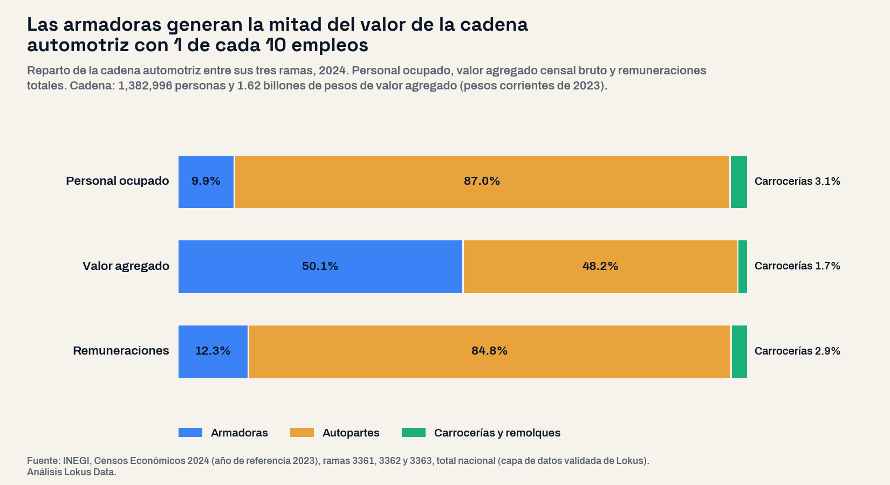
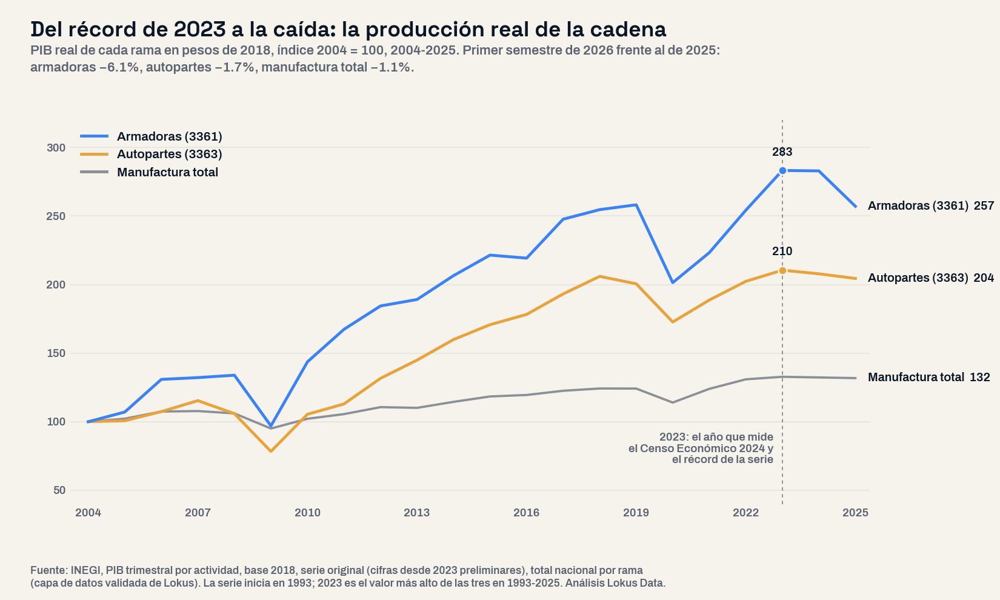

Dónde se queda el dinero de la cadena automotriz: las armadoras generan la mitad del valor con 1 de cada 10 empleos
El Censo Económico 2024 registra 1,382,996 personas en la cadena automotriz, 19 de cada 100 empleos manufactureros. Las armadoras generan 50.1% del valor agregado con 9.9% del personal; las autopartes, 48.2% con 87.0%. Coahuila desplazó a Chihuahua como mayor empleador y, desde el récord de 2023, la producción real de las armadoras cayó 9.1% en 2025 y 6.1% en el primer semestre de 2026.

El panorama: 1,382,996 empleos y 30 de cada 100 pesos de la manufactura
El Censo Económico 2024, que mide la actividad de 2023, registra en la cadena automotriz 3,212 unidades económicas, 1,382,996 personas ocupadas, 4.16 billones de pesos de producción y 1.62 billones de valor agregado, en pesos corrientes. Es 30.1% del valor agregado de toda la manufactura del país, contra 16.9% en 2004, y 19.2% de su empleo, contra 11.9%. Descontada la inflación, el PIB trimestral del INEGI muestra que entre 2004 y 2023 la producción de las armadoras creció 183% y la de autopartes 110%, contra 33% de la manufactura.
Este análisis partió de una pregunta abierta: ¿qué eslabones y qué estados ganaron peso en veinte años, cuánto del valor se queda en cada eslabón y cómo llega la industria a 2026? Se midieron las tres ramas de la cadena, armadoras de automóviles y camiones (SCIAN 3361), carrocerías y remolques (3362) y autopartes (3363) con sus ocho subramas, en los cinco Censos Económicos, con los 32 estados sin preseleccionar regiones; la coyuntura, con el PIB trimestral por rama en pesos de 2018. Los montos del Censo están en pesos corrientes: se comparan proporciones, no montos entre censos.
La lectura de negocio
«La industria automotriz» no es un mercado, son varios. Un trabajador de armadora genera 9.1 veces más valor agregado que uno de autopartes, pero gana en promedio 1.3 veces más. Dimensionar con el promedio de la cadena equivoca el tamaño de cualquier eslabón.
La cadena de valor: dónde se queda cada peso
Las armadoras ocupan a 136,982 personas, 9.9% de la cadena, y generan 50.1% de su valor agregado. Las autopartes ocupan a 1,203,759 (87.0%) y generan 48.2%; carrocerías y remolques, 42,255 personas y 1.7%. El valor agregado por persona es de $5.94 millones al año en las armadoras y de $651 mil en las autopartes. La remuneración media anual, en cambio, es de $263,848 y $202,288: una diferencia de 30%.
La diferencia se ve en cuánto del valor se paga como nómina. De cada 100 pesos de valor agregado, las armadoras pagan 4.3 en remuneraciones y las autopartes 30.8; el promedio de la manufactura es 24.1. En las armadoras esa proporción bajó en cada censo, de 15.0 en 2004 a 4.3 en 2024, aun después de la reforma de subcontratación de 2021, que llevó a la nómina propia a personal que antes llegaba por terceros (el personal dependiente de las armadoras pasó de 80.6% a 97.3%). El resto es excedente bruto de operación de las empresas.
Dentro de las autopartes el contraste es igual de marcado. El mayor empleador de toda la cadena es la fabricación de equipo eléctrico y electrónico para vehículos, donde están los arneses: 514,325 personas, 37.2% de la cadena, con el menor valor agregado por persona de las ocho subramas de autopartes ($405,940). En el otro extremo, motores y sus partes genera $1,520,741 por persona con 88,376 trabajadores.
| Eslabón | Personal ocupado | % de la cadena | Valor agregado por persona (pesos al año) | Remuneración media anual (pesos) | Remuneraciones por cada 100 pesos de valor agregado | Mujeres |
|---|---|---|---|---|---|---|
| Armadoras (automóviles y camiones) | 136,982 | 9.9% | $5,935,230 | $263,848 | 4.3 | 22.7% |
| Carrocerías y remolques | 42,255 | 3.1% | $653,819 | $203,713 | 29.8 | 14.4% |
| Equipo eléctrico y electrónico (arneses) | 514,325 | 37.2% | $405,940 | $177,458 | 43.7 | 49.7% |
| Otras autopartes | 208,579 | 15.1% | $803,525 | $227,970 | 28.1 | 41.2% |
| Asientos e interiores | 196,572 | 14.2% | $530,841 | $189,587 | 35.0 | 49.0% |
| Motores y sus partes | 88,376 | 6.4% | $1,520,741 | $226,420 | 14.6 | 29.6% |
| Piezas metálicas troqueladas | 58,275 | 4.2% | $899,697 | $216,954 | 23.9 | 33.1% |
| Dirección y suspensión | 51,231 | 3.7% | $896,234 | $260,864 | 28.7 | 31.4% |
| Transmisión | 50,805 | 3.7% | $836,282 | $255,830 | 30.4 | 28.5% |
| Frenos | 35,596 | 2.6% | $774,681 | $239,906 | 30.3 | 33.4% |
Censo Económico 2024 (año de referencia 2023), total nacional, pesos corrientes; subramas de autopartes ordenadas por personal. La remuneración media divide entre el personal remunerado. Fuente: INEGI (capa Oro Lokus).
El mapa: el hub se movió de Chihuahua a Coahuila y el Bajío
En fabricación de equipo de transporte, el subsector que agrupa a la cadena, Coahuila es el mayor empleador del país con 250,861 personas, seguido de Chihuahua (204,268), Guanajuato (135,943), Nuevo León (129,591) y Tamaulipas (104,697). En el censo de 2014 Chihuahua todavía era el primero; desde el de 2019 lo es Coahuila. Entre 2004 y 2024, los estados que más empleo sumaron fueron Coahuila (+179,465), Guanajuato (+121,532) y Nuevo León (+90,031).
En autopartes el cambio es mayor. Chihuahua concentraba 36.2% del empleo nacional de autopartes en 2004 y 14.7% en 2024: pasó de 159,151 a 176,763 personas mientras el país multiplicaba las suyas por 2.7, y entre 2019 y 2024 perdió 6,755. En arneses, su especialidad, bajó de 51.5% a 22.6% del empleo nacional. Entre los estados con más de mil personas en autopartes en 2004, los que más multiplicaron su empleo fueron Durango (27.6 veces, a 39,349) y Guanajuato (10.9 veces, a 110,648); Aguascalientes lo hizo 7.5 veces y San Luis Potosí 5.5.
| Estado | Personal en autopartes 2004 | Personal en autopartes 2024 | % nacional 2004 | % nacional 2024 | Equipo de transporte en el valor agregado manufacturero del estado, 2024 |
|---|---|---|---|---|---|
| Coahuila | 61,139 | 210,615 | 13.9% | 17.5% | 61.3% |
| Chihuahua | 159,151 | 176,763 | 36.2% | 14.7% | 37.1% |
| Guanajuato | 10,146 | 110,648 | 2.3% | 9.2% | 52.5% |
| Nuevo León | 35,008 | 105,221 | 8.0% | 8.7% | 26.1% |
| Tamaulipas | 42,826 | 97,283 | 9.8% | 8.1% | 19.7% |
| Querétaro | 15,671 | 69,190 | 3.6% | 5.7% | 29.3% |
| San Luis Potosí | 11,492 | 63,091 | 2.6% | 5.2% | 46.7% |
| Aguascalientes | 6,889 | 51,407 | 1.6% | 4.3% | 73.6% |
| Sonora | 16,629 | 51,033 | 3.8% | 4.2% | 42.1% |
| Estado de México | 25,462 | 42,360 | 5.8% | 3.5% | 21.5% |
Los diez estados con más personal en autopartes (SCIAN 3363) en 2024. En 2024 la rama no tiene dato publicado en nueve estados; ninguno cabría en esta lista: el mayor, Zacatecas, tiene 28,224 personas en todo el subsector de equipo de transporte. Fuente: INEGI, Censos Económicos (capa Oro Lokus).
La última columna es la dependencia del cliente: el equipo de transporte genera 73.6% del valor manufacturero de Aguascalientes, 61.3% del de Coahuila, 52.5% del de Guanajuato y 50.6% del de Puebla. Ya mapeamos los 10 municipios con más empleo automotriz.
Riesgos: el Censo midió el récord y la producción ya cae
El año que retrata el Censo Económico 2024 fue el mejor de la serie. En 2023 la producción real de armadoras, autopartes y manufactura alcanzó el valor más alto de la serie del PIB trimestral del INEGI, que inicia en 1993. Desde entonces, las armadoras produjeron 0.1% menos en 2024 y 9.1% menos en 2025, la mayor caída desde 2020, con lo que quedaron por debajo de 2019. La caída anual por trimestre fue de 17.0% en el tercero de 2025, 12.0% en el cuarto, 10.1% en el primero de 2026 y 2.3% en el segundo. En el primer semestre de 2026, las armadoras produjeron 6.1% menos que un año antes y las autopartes 1.7% menos.

La demanda externa tampoco empuja. Las exportaciones de equipo de transporte sumaron 104,780 millones de dólares en el primer semestre de 2026, 0.4% más que un año antes, mientras las exportaciones totales de los estados crecieron 25.1%; su participación en el total bajó de 37.0% a 29.7%. Como mostramos en el mapa del boom exportador de 2026, el crecimiento fue de la electrónica. Para un proveedor de autopartes, 2026 es un año de ganar participación de mercado, no de crecer con la industria.
Perfil del mercado laboral: 563 mil mujeres y salarios que no siguen a la productividad
La cadena ocupa a 562,696 mujeres, 40.7% de su personal, por encima del promedio manufacturero (39.5%). En arneses son 49.7% y en asientos 49.0%; en las armadoras, 22.7%, el doble que en 2004 (11.1%). La remuneración media de toda la cadena fue de $208,332 al año, casi igual al promedio de la manufactura ($205,905). En los eslabones intensivos en mano de obra queda por debajo: $177,458 en arneses y $189,587 en asientos, contra $263,848 en las armadoras. Para quien contrata, el costo laboral de referencia depende del eslabón, no del promedio de la industria.
Insights para la acción
- Dimensiona por eslabón. El valor agregado por persona va de $406 mil en arneses a $5.9 millones en las armadoras: el plan de negocio parte del eslabón que atiendes, no del total.
- El mapa de proveeduría ya no es la frontera. Coahuila y Guanajuato sumaron más de 300 mil empleos en equipo de transporte en veinte años; Chihuahua pasó de concentrar más de un tercio del empleo en autopartes a menos de 15%.
- Planea 2026 con la producción real, no con el Censo. El Censo retrata 2023, el récord. Hoy las armadoras producen 6.1% menos que hace un año y las exportaciones del subsector están planas en dólares.
- Dependencia del cliente. Donde la industria rebasa la mitad del valor manufacturero, un proveedor de servicios industriales tiene un mercado grande, pero concentrado en un solo sector.
- Cruza con la competencia instalada. El Censo dice cuánto pesa cada eslabón; el estudio de mercado y el conteo de unidades económicas dicen cuánta oferta ya atiende a esa demanda en cada estado y municipio.
Conclusión
La cadena automotriz mexicana multiplicó su empleo por 2.8 en veinte años y ya genera 30 de cada 100 pesos del valor manufacturero, pero su valor no se reparte parejo: las armadoras se quedan con la mitad con uno de cada diez empleos, y las autopartes sostienen casi nueve de cada diez puestos con la otra mitad. El mapa se movió de Chihuahua a Coahuila y el Bajío, y el Censo la retrató en su mejor año. En 2026 la pregunta no es cuánto vale la industria, sino qué eslabón, en qué estado y con qué producción real.
Preguntas frecuentes
¿Cuántas personas trabajan en la industria automotriz en México?
1,382,996 personas en la cadena automotriz (armadoras, carrocerías y autopartes), según el Censo Económico 2024 del INEGI, que mide la actividad de 2023: 19.2% del empleo manufacturero. 1,203,759 trabajan en autopartes.
¿Qué estado tiene más empleo en la industria automotriz?
Coahuila, con 250,861 personas en fabricación de equipo de transporte y 210,615 en autopartes en 2024. Le siguen Chihuahua (204,268) y Guanajuato (135,943).
¿Cuánto valor genera la industria automotriz por trabajador?
En las armadoras, $5.94 millones de pesos de valor agregado por persona al año; en autopartes, $650,908, y en arneses, $405,940 (Censo Económico 2024, pesos corrientes).
¿Cómo va la producción automotriz en 2026?
A la baja. En el primer semestre de 2026 la producción real de las armadoras fue 6.1% menor que un año antes y la de autopartes 1.7% menor, después de caer 9.1% y 1.6% en 2025 (INEGI, PIB trimestral, cifras preliminares).
Análisis basado en los Censos Económicos 2004, 2009, 2014, 2019 y 2024 del INEGI (años de referencia 2003 a 2023), subsector 336 y ramas 3361, 3362 y 3363 con sus subramas, total nacional y por estado, en pesos corrientes; en el PIB trimestral por actividad económica del INEGI, base 2018, serie original, 1993 al segundo trimestre de 2026 (cifras desde 2023 preliminares), y en las Exportaciones Trimestrales por Entidad Federativa del INEGI, total nacional por subsector, dólares corrientes, cifras de 2026 preliminares. Consultado en la capa de datos validada de Lokus. Cadena automotriz = ramas 3361, 3362 y 3363; por estado se usa el subsector 336, que incluye equipo ferroviario, aeroespacial y otro equipo de transporte (7.3% del personal nacional del subsector), porque la rama 3361 es confidencial en la mayoría de los estados; el subsector es confidencial en Campeche y Guerrero en 2024. La remuneración media divide entre el personal remunerado; por el cambio de composición que trajo la reforma de subcontratación de 2021, no se comparan remuneraciones medias entre los censos 2019 y 2024. El valor agregado censal y el PIB trimestral son mediciones distintas y no se combinan en un indicador. Clasificación SCIAN: 31-33 industrias manufactureras, 336 fabricación de equipo de transporte, 3361 automóviles y camiones, 3362 carrocerías y remolques, 3363 partes para vehículos automotores (33631 motores, 33632 equipo eléctrico y electrónico, 33633 dirección y suspensión, 33634 frenos, 33635 transmisión, 33636 asientos e interiores, 33637 piezas troqueladas, 33639 otras partes). Fecha de análisis: 16 de octubre de 2026. Para medir el tamaño de cada eslabón, la competencia instalada y el mercado de cualquier estado o municipio con datos oficiales integrados, visita lokusdata.com